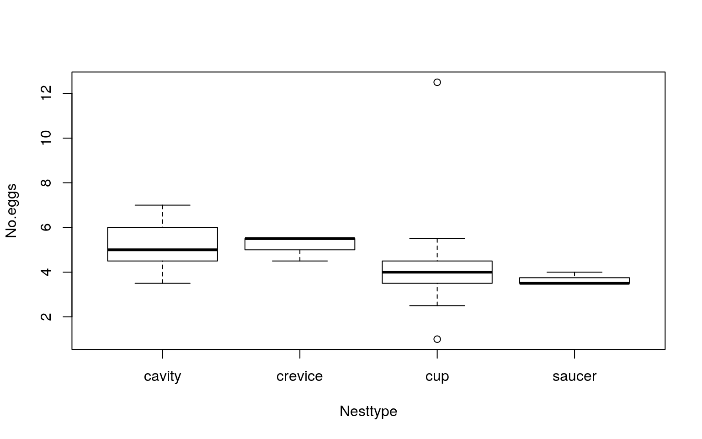
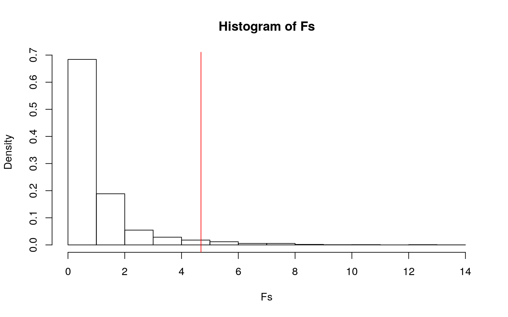
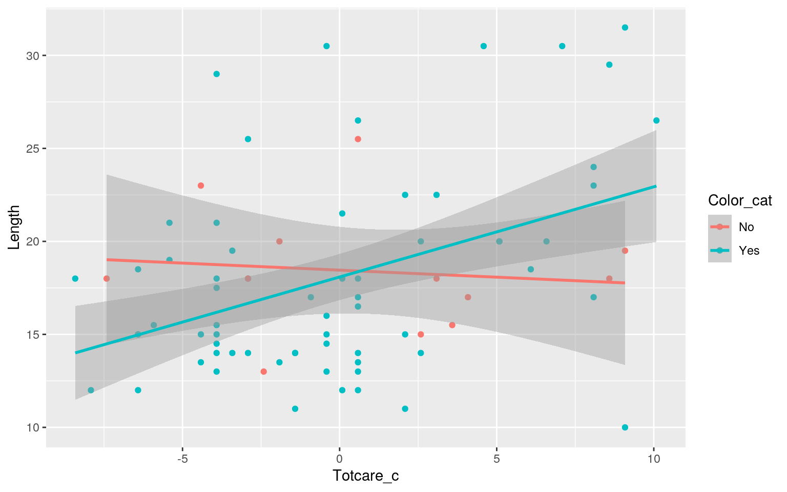
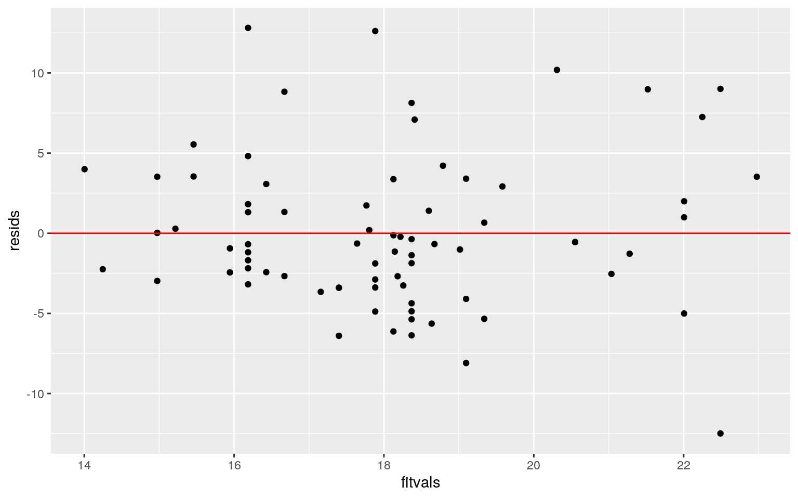
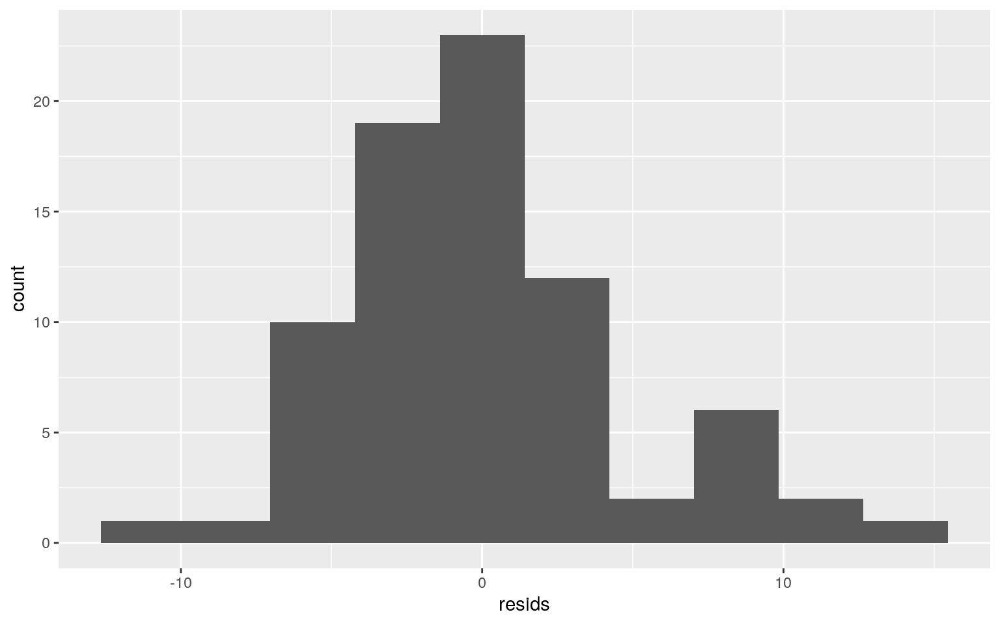
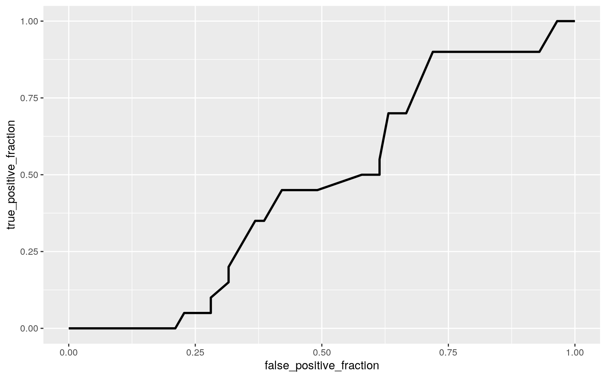

Bird_Nest <- read_csv("BirdNest.csv")
Bird_Nest <- Bird_Nest %>% select(- X1, - Page, - Species, - Nestling, - Incubate)
Bird_Nest <- Bird_Nest %>% na.omit()
Bird_Nest <- Bird_Nest[-c(11, 12, 29, 30, 21, 28),] #these rows had errors with the data (didn't match the format)
Bird_Nest <- Bird_Nest%>%mutate(Color_cat = case_when(Color==1 ~ "Yes", Color==0 ~ "No"))
#The above code were lines I ran to set up my datasetThroughout this semester, I have been enrolled in a course called "Animal Behavior," and we have spent a lot of time discussing various species of birds as well as their behaviors (primarily those related to parental care). With that being said, I decided to choose the dataset Bird_Nest because it contains information regarding species and nest characteristics for many birds from North America. All of the data came from a project that a student from Grinnell College completed in 1999, using information from a book called, "The Birders Handbook (1998)." For the purpose of this project, I chose to eliminate certain variables that I deemed unnecessary (as you can tell from the above code) and will be using the 8 variables that are listed below. There was also one observation that contained NAs in many of the columns, so I decided to remove it in its entirety (there are now 77 different birds/observations).
Common- The non-latin name for the species (identifier variable)
Length- The species's average body length in centimeters
Nesttype- The type of nest the species occupies (cup, cavity, saucer, or crevice)
Location- The location of the bird's nest (deciduous forest, bridge, shrub, ground, bank, building, coniferous forest, snag, or cliff)
No.eggs- Average number of eggs in the nest
Color- Solid/plain color is designated as 0 and speckled/spotted coloration is designated as 1
Color_cat- This is an extra categorical variable (not include in the above count of variables) that I created, if the observation was a 1 in the numeric color variable it is designated as "Yes" here and if it was 0 it is catagorized as "No"
Totcare- Total species care by parent (incubating plus nestling time)
Closed.- 0 is the designation for open nest (saucer or cup) and 1 represents closed nest (cavity or crevice)
library(rstatix)
nest <- Bird_Nest$Nesttype
DVs <- Bird_Nest %>% select(Length,No.eggs,Totcare)
#Test multivariate normality for each group (null: assumption met)
sapply(split(DVs,nest), mshapiro_test)## cavity crevice cup saucer
## statistic 0.8585833 0.7893586 0.6062924 0.6297763
## p.value 0.01453665 0.08933946 1.118121e-10 0.001240726The results of the Shapiro test confirmed that the data is not distributed normally (all p values were less than 0.05). Thus, this test concluded that the homogeneity of covariance assumption was violated.
man1<-manova(cbind(Length, No.eggs, Totcare)~Nesttype, data=Bird_Nest)
summary(man1) #The p was significant, so now I get the univariate ANOVA## Df Pillai approx F num Df den Df Pr(>F)
## Nesttype 3 0.32657 2.9724 9 219 0.002342 **
## Residuals 73
## ---
## Signif. codes: 0 '***' 0.001 '**' 0.01 '*' 0.05 '.' 0.1
' ' 1summary.aov(man1) #univarte ANOVAs from MANOVA## Response Length :
## Df Sum Sq Mean Sq F value Pr(>F)
## Nesttype 3 145.81 48.602 1.8738 0.1415
## Residuals 73 1893.49 25.938
##
## Response No.eggs :
## Df Sum Sq Mean Sq F value Pr(>F)
## Nesttype 3 22.76 7.5868 4.6846 0.00477 **
## Residuals 73 118.23 1.6195
## ---
## Signif. codes: 0 '***' 0.001 '**' 0.01 '*' 0.05 '.' 0.1
' ' 1
##
## Response Totcare :
## Df Sum Sq Mean Sq F value Pr(>F)
## Nesttype 3 175.35 58.449 2.7945 0.04623 *
## Residuals 73 1526.85 20.916
## ---
## Signif. codes: 0 '***' 0.001 '**' 0.01 '*' 0.05 '.' 0.1
' ' 1Bird_Nest%>%group_by(Nesttype)%>%summarize(mean(Length),mean(No.eggs),mean(Totcare)) #Eyeball the mean differences## # A tibble: 4 x 4
## Nesttype `mean(Length)` `mean(No.eggs)` `mean(Totcare)`
## <chr> <dbl> <dbl> <dbl>
## 1 cavity 15.6 5.41 29.5
## 2 crevice 18.2 5.17 30.2
## 3 cup 18.9 4.22 26.9
## 4 saucer 16.9 3.62 23.5pairwise.t.test(Bird_Nest$Length, Bird_Nest$Nesttype, p.adj = "none")##
## Pairwise comparisons using t tests with pooled SD
##
## data: Bird_Nest$Length and Bird_Nest$Nesttype
##
## cavity crevice cup
## crevice 0.427 - -
## cup 0.023 0.805 -
## saucer 0.658 0.741 0.442
##
## P value adjustment method: nonepairwise.t.test(Bird_Nest$No.eggs, Bird_Nest$Nesttype, p.adj = "none")##
## Pairwise comparisons using t tests with pooled SD
##
## data: Bird_Nest$No.eggs and Bird_Nest$Nesttype
##
## cavity crevice cup
## crevice 0.7593 - -
## cup 0.0012 0.2126 -
## saucer 0.0137 0.1170 0.3726
##
## P value adjustment method: nonepairwise.t.test(Bird_Nest$Totcare, Bird_Nest$Nesttype, p.adj = "none")##
## Pairwise comparisons using t tests with pooled SD
##
## data: Bird_Nest$Totcare and Bird_Nest$Nesttype
##
## cavity crevice cup
## crevice 0.825 - -
## cup 0.041 0.229 -
## saucer 0.020 0.060 0.159
##
## P value adjustment method: none0.05/13 #bonferroni correction## [1] 0.0038461541- (.95)^13 #probability of having at least 1 type 1 error## [1] 0.4866579To determine the effect of the type of nest (cavity, crevice, cup, or saucer) on 3 dependent variables (body length, number of eggs, and total time of care), I ran a 1-way MANOVA. The null hypothesis was that for the 3 DVs, means for each nest type are equal, and the alternative being that means are not equal. (Refer to the previous section for discussion of MANOVA assumptions). The results on the one-way MANOVA confirmed that, for at least one of the dependent variables, there were significant differences found across the different types of nests, Pillai trace = .32 pseudo F(9, 219) = 2.9724 p < 0.05.
After the MANOVA was significant, I needed to conduct univariate ANOVAs for each dependent variable. This time I accounted for Type 1 error rates when doing multiple comparisons, by using the bonferroni correction, which was found to be 0.0038. I found this by dividing the original alpha of 0.05 by the number of tests that were run which was 13 (1 MANOVA, 3 ANOVAs, and 9 t-tests). The probability of having at least one type I error is 0.487. Using the adjusted significance level, it was found that the univariate ANOVAs for all 3 dependent variables were insignificant, F(3, 73) = 119.26, p > .0038 (for each DV). The results of the post hoc analysis also came back insignificant (fail to reject the null hypothesis) when considering the bonferroni correction. This means that none of the nest types had significantly different mean values with regards to body length, number of eggs, and total parental care. However, the original MANOVA is still significant when considering this adjustment, Pillai trace = .32 pseudo F(9, 219) = 2.9724 p < 0.0038.
boxplot(No.eggs ~ Nesttype, data = Bird_Nest) #normality assumption was
library(car)
leveneTest(No.eggs ~ Nesttype, data = Bird_Nest) #equal variance assumption was met## Levene's Test for Homogeneity of Variance (center =
median)
## Df F value Pr(>F)
## group 3 0.5626 0.6414
## 73summary(aov(No.eggs~Nesttype,data=Bird_Nest))## Df Sum Sq Mean Sq F value Pr(>F)
## Nesttype 3 22.76 7.587 4.685 0.00477 **
## Residuals 73 118.23 1.620
## ---
## Signif. codes: 0 '***' 0.001 '**' 0.01 '*' 0.05 '.' 0.1
' ' 1The above one-way ANOVA was ran prior to the randomization test in order to compute the observed F-statistic.
obs_F<-4.685
Fs<-replicate(5000,{
new<-Bird_Nest%>%mutate(No.eggs=sample(No.eggs))
SSW<- new%>%group_by(Nesttype)%>%summarize(SSW=sum((No.eggs-mean(No.eggs))^2))%>%summarize(sum(SSW))%>%pull
SSB<- new%>%mutate(mean=mean(No.eggs))%>%group_by(Nesttype)%>%mutate(groupmean=mean(No.eggs))%>%summarize(SSB=sum((mean-groupmean)^2))%>%summarize(sum(SSB))%>%pull
(SSB/3)/(SSW/73)
})
mean(Fs>obs_F) #This is the p-value## [1] 0.0306hist(Fs, prob=T); abline(v = obs_F, col="red",add=T) To determine the effect of the nest type on the number of eggs contained in a nest, I decided to conduct a randomization test for the F-statistic/Anova. The null hypothesis was that the mean number of eggs does not differ based on the type of nest and the alternative was that there are differences in mean egg number between the various types of nests. The histogram shows the expected distribution of F-statistics under the null hypothesis (randomization distribution). The observed F-statistic (4.685) is shown in red on the histogram. The p-value was found to be 0.0322, which is equivalent to the proportion of F-statistics in the distribution that are greater than 4.685 (observed). Since this p-value is less than 0.05, the null hypothesis is rejected and I can conclude that the mean number of eggs does differ based on the type of nest. So, although the observed F-statistic is plausible under the null distribution, it is far enough out in this distribution that we can reject the null hypothesis
Bird_Nest$Totcare_c <- Bird_Nest$Totcare - mean(Bird_Nest$Totcare)
fit_1<-lm(Length ~ Color_cat*Totcare_c, data=Bird_Nest)
summary(fit_1)##
## Call:
## lm(formula = Length ~ Color_cat * Totcare_c, data =
Bird_Nest)
##
## Residuals:
## Min 1Q Median 3Q Max
## -12.4911 -2.9744 -0.6744 2.9186 12.8132
##
## Coefficients:
## Estimate Std. Error t value Pr(>|t|)
## (Intercept) 18.45388 1.42738 12.929 <2e-16 ***
## Color_catYes -0.36822 1.54839 -0.238 0.8127
## Totcare_c -0.07565 0.28799 -0.263 0.7935
## Color_catYes:Totcare_c 0.56060 0.31555 1.777 0.0798 .
## ---
## Signif. codes: 0 '***' 0.001 '**' 0.01 '*' 0.05 '.' 0.1
' ' 1
##
## Residual standard error: 4.834 on 73 degrees of freedom
## Multiple R-squared: 0.1635, Adjusted R-squared: 0.1292
## F-statistic: 4.758 on 3 and 73 DF, p-value: 0.004376The intercept is 18.45, which represents the predicted body length for non colored birds (solid/plain) with an average amount of total parental care. For birds with average amounts of parental care, colored birds (spotted/speckled) have a predicted body length that is 0.368cm less than non-colored birds. The estimated slope for total parental care on body length for non-colored birds is -0.076 (negative correlation). Furthermore, the slope of total parental care on body length for colored birds is 0.561 greater than for non-colored birds. The R-squared value is 0.164, which represents the proportion of variation that the model explains.
ggplot(Bird_Nest, aes(x=Totcare_c, y=Length, color=Color_cat)) + geom_point(aes(color=Color_cat)) + geom_smooth(method = "lm")
library(lmtest)
library(sandwich)
bptest(fit_1) #homoskedasticity assumption was met##
## studentized Breusch-Pagan test
##
## data: fit_1
## BP = 6.3167, df = 3, p-value = 0.09718resids<-fit_1$residuals; fitvals<-fit_1$fitted.values
ggplot()+geom_point(aes(fitvals,resids))+geom_hline(yintercept=0, col="red")
ggplot()+geom_histogram(aes(resids),bins=10) The resulting p-value for the Breuch-Pagan test was 0.097, which is greater than 0.05, so it can be confirmed that the data meets the homoskedasticity assumption. Based on the scatterplot, one can see that the data is fairly linear, so the linearity assumption can be confirmed; however, there are some outliers which linear regressions are sensitive to. Lastly, the histogram of the residuals shows that the data looks pretty normal.
coeftest(fit_1, vcov = vcovHC(fit_1))##
## t test of coefficients:
##
## Estimate Std. Error t value Pr(>|t|)
## (Intercept) 18.453883 1.148912 16.0621 < 2e-16 ***
## Color_catYes -0.368219 1.318132 -0.2793 0.78077
## Totcare_c -0.075649 0.160053 -0.4726 0.63787
## Color_catYes:Totcare_c 0.560598 0.224734 2.4945 0.01488
*
## ---
## Signif. codes: 0 '***' 0.001 '**' 0.01 '*' 0.05 '.' 0.1
' ' 1There was only 1 significant result that was found when recomputing the regression with robust standard errors, which was a change with regards to the previous regression. That being: the slope of total parental care on body length for colored birds is 0.561 greater than for non-colored birds. This difference is in fact significant,(b= 0.561,t= 2.49, p= 0.015), even though it wasn't before.
samp_distn<-replicate(5000, {
boot_dat <- sample_frac(Bird_Nest, replace=T)
fit_2 <- lm(Length ~ Color_cat*Totcare_c, data=boot_dat)
coef(fit_2)
})
samp_distn %>% t %>% as.data.frame %>% summarize_all(sd)## (Intercept) Color_catYes Totcare_c
Color_catYes:Totcare_c
## 1 1.307904 1.459065 0.2808088 NAThe bootstrapped standard errors (SEs) only vary slightly from the previous SEs that were computed. (Note that the SE for the interaction of color and total parental care is not available in this case.) When compared to the original SEs, the bootstrapped ones are slighly smaller which means there is less of a spread around the mean (example: the SE for the intercept changed from 1.427 to 1.195). When compared to the robust SEs, the bootstrapped ones are slighly larger which means there is more of a spread around the mean (example: the SE for the intercept changed from 1.149 to 1.195).
library(tidyverse)
library(lmtest)
library(glmnet)
library(sandwich)
fit_log <- glm(Closed. ~ Length + No.eggs,data = Bird_Nest,family = binomial(link="logit"))
coeftest(fit_log)##
## z test of coefficients:
##
## Estimate Std. Error z value Pr(>|z|)
## (Intercept) -3.629455 2.224895 -1.6313 0.10283
## Length -0.063861 0.068645 -0.9303 0.35221
## No.eggs 0.798680 0.331288 2.4108 0.01592 *
## ---
## Signif. codes: 0 '***' 0.001 '**' 0.01 '*' 0.05 '.' 0.1
' ' 1exp(coef(fit_log))## (Intercept) Length No.eggs
## 0.02653063 0.93813553 2.22260481The odds of the nest being closed is 0.027 when body length is 0 cm and the number of eggs is 0 (intercept). When controlling for the number of eggs, for every 1 cm increase in body length, the odds of the nest being closed increases by a factor of 0.938 (not significant). When controlling for body length, for every 1 unit increase in the number of eggs, the odds of the nest being closed increases by a factor of 2.22 (significant, p-value= 0.0159).
prob <- predict(fit_log, type = "response")
(56+7)/77 #accuracy## [1] 0.81818187/8 #specificity## [1] 0.87556/60 #sensitivity## [1] 0.933333356/57 #precision## [1] 0.9824561table(predict = as.numeric(prob > 0.5), truth = Bird_Nest$Closed.) %>% addmargins ## truth
## predict 0 1 Sum
## 0 56 13 69
## 1 1 7 8
## Sum 57 20 77The accuracy is 0.818, which represents the proportion of correctly classified birds (closed or open nest). The sensitivity or true positive rate is the proportion of open nests (designated as 0) that were correctly classified and it is 0.812. The specificity or true negative rate is 0.875 and it represents the proportion of closed nests (designated as 1) that were correctly classified. The precision, which is the propotion of nests classified as open that actually are open, is 0.982. (Note: it would not knit the class_diag function because it said that it did not exist)
library(plotROC)
ROC_plot <- ggplot(data = Bird_Nest) + geom_roc(aes(d = Closed., m = Length + No.eggs), n.cuts = 0)
ROC_plot
calc_auc(ROC_plot)## PANEL group AUC
## 1 1 -1 0.4684211The tradeoff between sensitivity and specificity can be visualized with the above ROC curve. The AUC value is the area under that respective curve. The computed AUC is 0.468, which is considered a very bad AUC value.
library(tidyverse)
library(lmtest)
BirdNest_ALL <- Bird_Nest %>% select(-Color_cat, -Common, -Location) #got rid of unecessary variables and ones I accidentally made
fit_ALL <- glm(Closed. ~ ., data = BirdNest_ALL, family = "binomial")
prob_ALL <- predict(fit_ALL, type = "response")
table(predict = as.numeric(prob_ALL > 0.5), truth = BirdNest_ALL$Closed.) %>% addmargins## truth
## predict 0 1 Sum
## 0 57 0 57
## 1 0 20 20
## Sum 57 20 77It would not knit because it said the class_diag function did not exist. ### LASSO
library(glmnet)
set.seed(1234)
LASS_response <- as.matrix(BirdNest_ALL$Closed.)
BNest_preds <- model.matrix(Closed. ~ ., data = BirdNest_ALL)[, -1]
BNest_preds <- scale(BNest_preds)
cv <- cv.glmnet(BNest_preds, LASS_response, family = "binomial")
lasso_fit <- glmnet(BNest_preds, LASS_response, family = "binomial", lambda = cv$lambda.1se)
coef(lasso_fit)## 9 x 1 sparse Matrix of class "dgCMatrix"
## s0
## (Intercept) -4.214242
## Length .
## Nesttypecrevice .
## Nesttypecup -7.038323
## Nesttypesaucer -2.959390
## No.eggs .
## Color .
## Totcare .
## Totcare_c .As determined by the LASSO, the variables Nesttypecup and Nesttypesaucer will be retained because they are the most predictive variables.
The rest would not knit because it said the class_diag function did not exist.